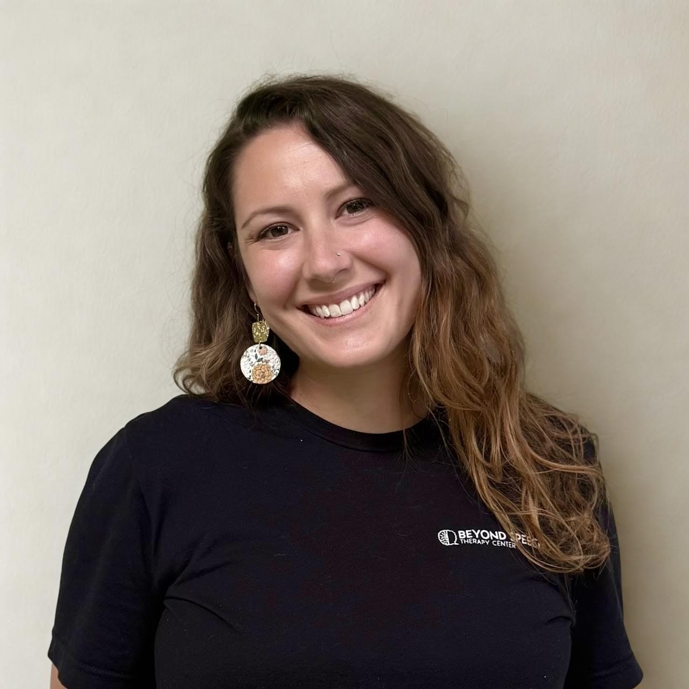
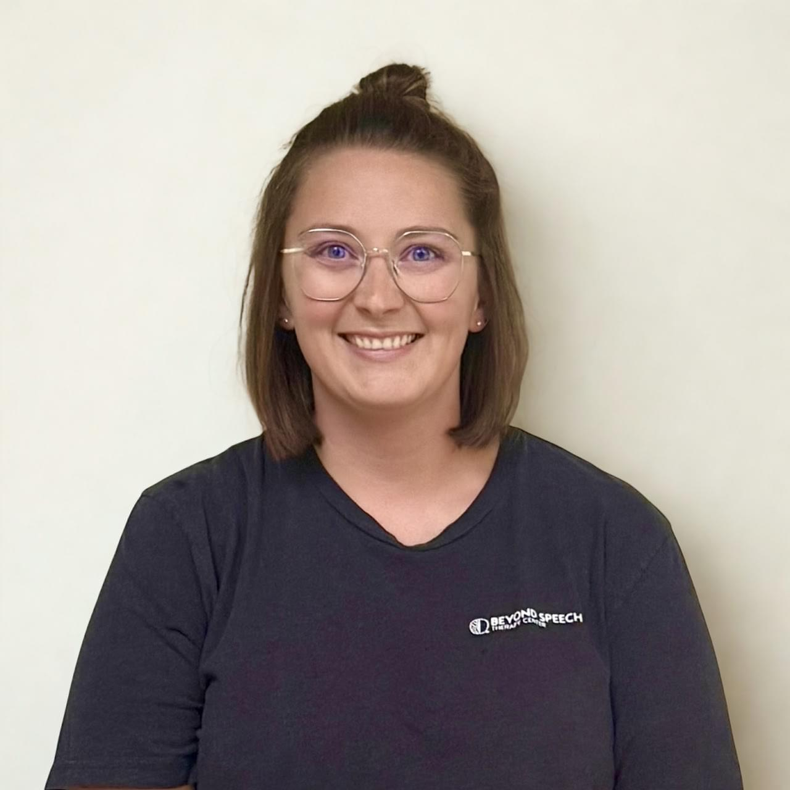
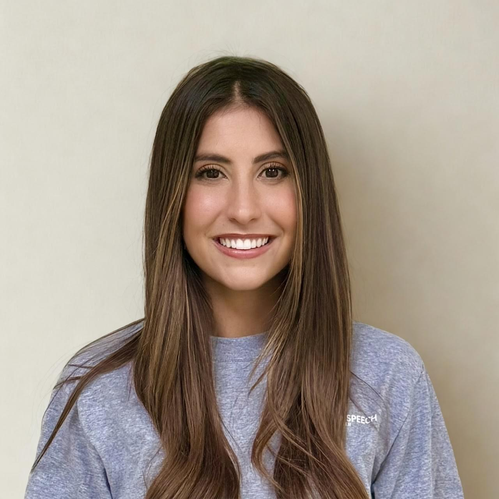
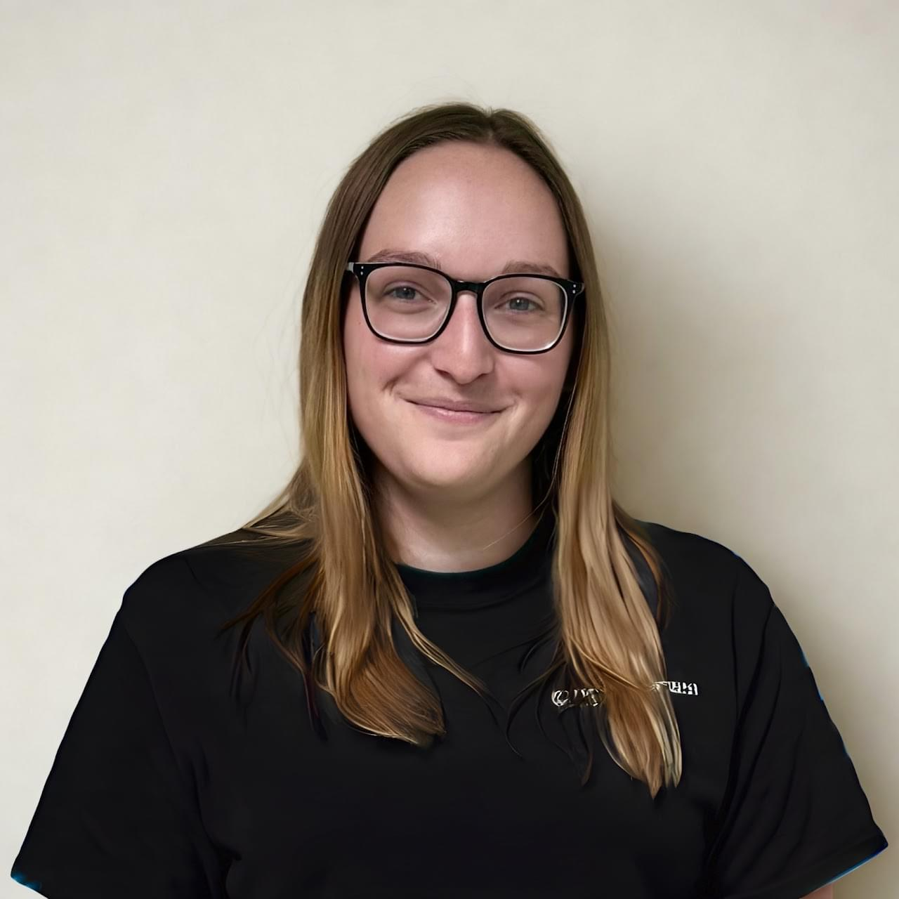
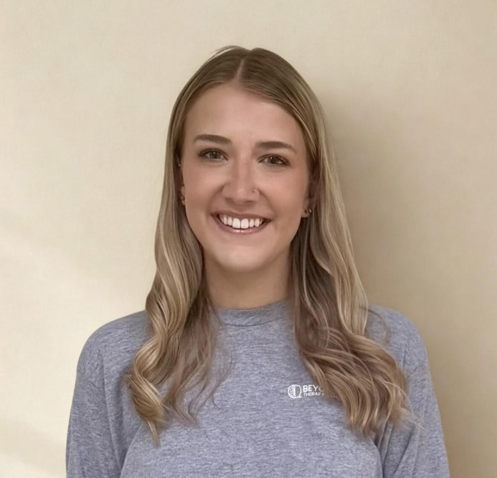
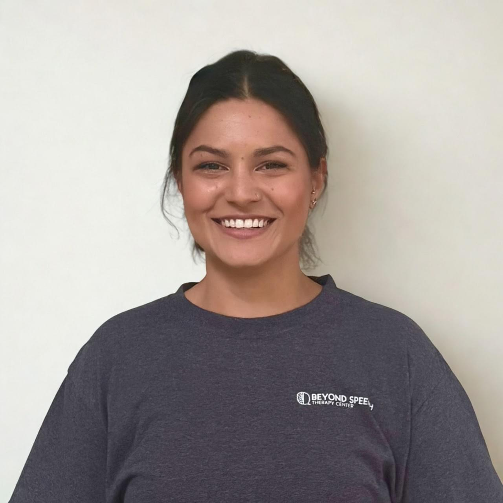
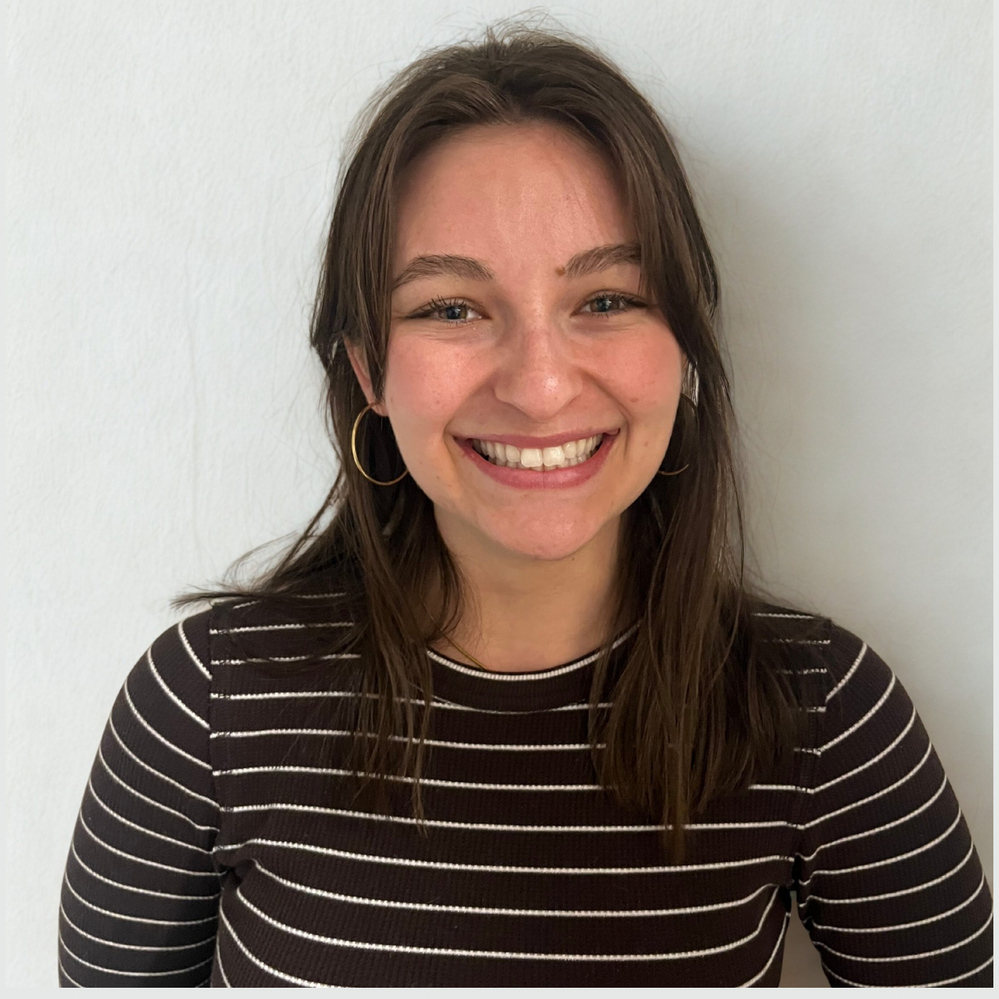

Meet Your Support Team

Samantha Fox, M.A., CCC-SLP
Founder • Speech-Language Pathologist • S2C Practitioner

Emma Fiorita, MOT, OTR/L
Clinical Director, Beyond Speech Therapy (Cuyahoga Falls) • Co-Owner, Beyond Speech Therapy (Columbus)

Michaela Demeio, M.A., CCC-SLP
Speech-Language Pathologist

Erika Brown, M.A., CCC-SLP
Speech-Language Pathologist

Karissa Brady M.A., CCC-SLP
Speech-Language Pathologist

Caroline Madaffer, MA, CF-SLP
Speech-Language Pathologist
Kayley Keller
S2C Practitioner

Taryn Cook, MS, CTRS
Recreation Therapist • S2C Practitioner
Amber Tuck
Administrative Assistant
